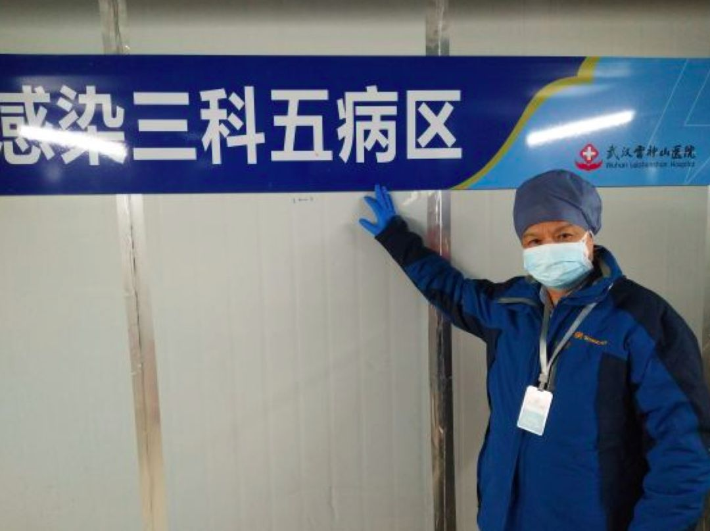
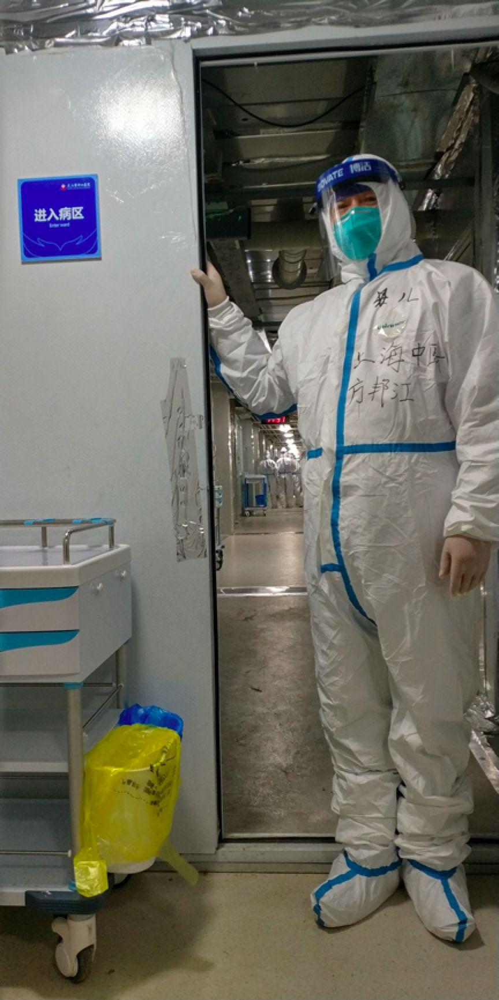
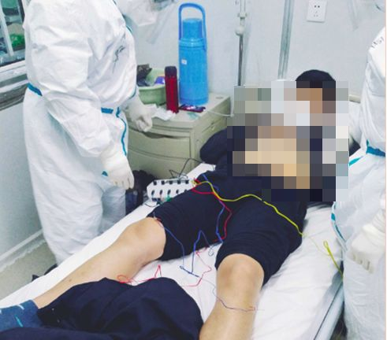
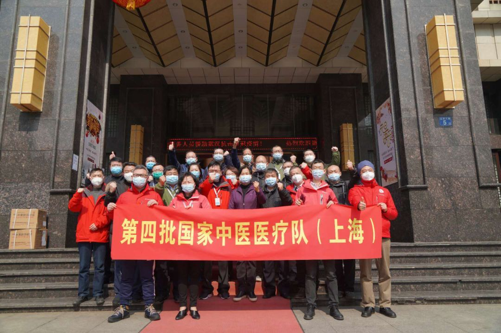
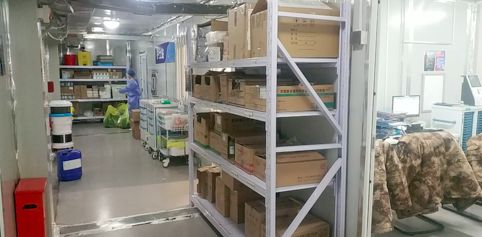

特别报道|武汉火线救人50天现场全记录
原文链接 备份链接 “很多人去世。”袁鸣说，“但他们和我们都尽了最大的努力。” 2月15日上午，刚刚经历了一夜冬日雷雨和大风的武汉大雪纷飞，袁鸣早早进入病房查房。依次穿上蓝色隔离服、白色防护服，戴上手术帽、面屏和护目镜，套上手套和脚 …
龙华医院、市中医医院接管的C5病区46位患者，经中医治疗后，大多数患者第一次新型冠状病毒核酸检测结果已呈阴性，其中，最严重两例危重病患者采用“截断扭转”防治策略，一例患者趋于痊愈，另一例病情较前明显好转。
记者 | 周 洁
上海国家中医医疗队首例治愈出院的患者走出武汉雷神山医院，这一天，也是第四批国家中医医疗队抵达武汉雷神山医院的第10天。
2月25日，由上海中医药大学附属龙华医院、上海市中医医院组建的武汉市雷神山医院感染三科五病区接收的首批新冠肺炎确诊患者陈某康复出院。

更令人振奋的是，龙华医院、市中医医院接管的C5病区46位患者，经中医治疗后，大多数患者第一次新型冠状病毒核酸检测结果已呈阴性，其中，最严重两例危重病患者采用“截断扭转”防治策略，一例患者趋于痊愈，另一例病情较前明显好转。
结束了一天的工作，龙华医院急诊科主任、雷神山C5病区主任方邦江接受了《新民周刊》的专访。援鄂任务紧急下达后，年过50的他第一时间主动报名，虽然身上带着不少老毛病，到达武汉后他仍然每天工作超过12个小时。
他说，已经做好了准备，等疫情彻底控制，最后一批撤离武汉。

《新民周刊》：请介绍一下第一位治愈出院的病人，他的治疗过程是怎样的？
方邦江：我们接诊这位的时候，他呼吸困难，血压氧和度下降。根据患者的临床特征，通过临床辨证，我们讨论认为其病因主要是湿毒疫邪为患，病属“湿温”之范畴，乃”瘟毒上受”，其病机系湿困表里、肺胃同病，治拟化湿、解毒、透表，方拟藿朴夏苓汤化裁。
这样治疗了几天之后，他的症状就好了，我们做了两次核酸，拍了CT，查了血象，基本无异常之后就允许他出院了。
我们相信中西医相互取长补短，一定会在这个病的治疗上取得突破，能够把这个病的死亡率和轻中度患者发展到危重症恶化率给它降下来。

《新民周刊》：雷神山的病人有什么特点？中医角度怎么看待新冠肺炎？
方邦江：我们病区的病人，大概有30%的重症病人。在治疗方法上是中医为主，西医为辅，中西医结合。
很多人对于中医的印象，都是慢郎中，是治未病、治慢病的，比如大家熟悉的慢性病开个膏方调理，实际上中医在治疗急病和传染病上一直都能发挥巨大作用。
早在黄帝的时候，人们就已经认识到有传染病的存在。而几百年前吴有性写的《温疫论》一书中，就指出“伤寒不传染于人，时疫能传染于人。伤寒之邪，自毫窍而入；时疫之邪，自口鼻而入”“盖温疫之来，邪自口鼻而感，入于膜原，伏而未发，不知不觉”。说明当时我们已认识到了瘟疫有空气和接触两种传染方式，这比西方早了几百年。江苏一带古代传染病比较多，孕育了很多像吴有性、叶天士、吴鞠通等温病学家，为我们后世治疗传染病积累了经验。
在新冠肺炎没有什么特效治疗药物之前，在危重病救治方面充分发挥中医治疗传染病的优势，中西医结合，优势互补，我觉得对于这个传染病的救治是很有帮助的。

《新民周刊》：中医具体有哪些治疗方法？
方邦江：来武汉之前，其实我早已经参与了新冠肺炎的治疗。因为我此前在湖北工作学习，武汉各大医院里都有我的同学、学生，他们第一时间联系我会诊。
凭借多年治疗传染病的经验，我给了他们一些建议，比较欣慰的是，其中有一家医院的40多个病人，包括所有重症病人，病情都好转了，没有一例死亡。
此外，为了及早做好到疫区参战准备，我查阅了不少中医治疗传染病文献，还应人民卫生出版社的邀请，组织包括湖北疫区和全国一线抗疫专家在过年期间编写出版了《新型冠状病毒感染的肺炎中西医结合防控手册》。就目前疫情我们看到，对于大多数轻症、普通型病人，中西医结合治疗的效果是比单纯西医治疗要好得多的。
中医学是讲究整体观念、辨证论治，要因人因地因时而异。来武汉雷神山之前，我在参考全国和上海的《新型冠状病毒肺炎诊疗方案》的基础上，针对轻症患者、中重症患者和危重症患者制定了不同的治疗方案。目前，我们有中药、针灸、无烟艾灸、经络治疗仪，还有功法（八段锦）等一系列的中医治疗方法，最近我们还和龙华医院贾立军教授等基于中医理论、传统文化冥想新冠肺炎辅助康复音乐疗法等系列功法和心理干预的康复治疗，帮助患者更为积极乐观地看待疾病，促进疾病康复。

患者接受电针仪治疗
《新民周刊》：对重症患者我们有哪些措施？
方邦江：新冠肺炎具有起病急、发展快、变化速、病势重、威胁大等急性传染病特点，病人感染后，很快就出现了急性虚症的状态，也就是俗称的免疫力低下的状态。我们就通过增强机体的免疫力，通过采取大量地补气滋阴，提高他自身的免疫力，取得了比较好的效果，提高了临床疗效。
新冠肺炎最常见的重症和死亡原因是呼吸衰竭、休克和多脏器衰竭，在中医里属“温病”范畴，其关键致病因素是“毒”和“瘀”，基于中医“温病下不厌早”和“六腑以通为用”，早、中期采用荡涤“毒”邪、“急下存阴”，以顾护正气，既病防变，快速截断恶性发展趋势，也叫“截断扭转”防治策略。这个方法用来治疗脓毒症2018年获得国家重点研发计划支持，脓毒症是感染导致的致死性器官功能不全，新冠肺炎危重症事实上就是脓毒症导致的多脏器功能衰竭，目前这两位患者我就是使用了这个策略，使得两名危重症患者病情有了好转。
针对病人呼吸衰竭，我们在既往获得上海市卫健委针灸治疗老年咳喘病基础上，通过针灸的方法治疗用于减少或替代呼吸机治疗，我们一个病人通过治疗后当晚他的呼吸就趋于正常了，避免使用呼吸机。还有一个病人本来要进行插管的，我们最后用了无创呼吸机，同时采用中成药、针灸等方法，现在这个病人全身情况也良好，带机时间减少。
我们病区48位患者，我们病区中医治疗率100%,经中医治疗后，大多数患者第一次新型冠状病毒核酸检测结果已呈阴性，所有病人都在一个个好转。

国家中医药管理局党组书记余艳红到上海驻地慰问
《新民周刊》：雷神山是一家新建的医院，医疗队抵达后当地的硬件条件如何？接管雷神山后，做了哪些工作？
方邦江：2月14日晚上，医院发布了紧急通知，号召全院员工参加医疗队援鄂。其实我早就有这个思想准备，我是名有30多年党龄的老党员，急救医学科的主任，长期从事感染病和危重症研究，是国家中医药领军人才“岐黄学者”，早晚得来。另一个我还是湖北人，还被聘为湖北省“楚天学者”，对于家乡的风土人文比较了解，所以紧急通知下来后，我第一时间报了名，同时我们急诊科的所有主治医生都报了名。

我们是第四批援鄂国家中医医疗队，大概凌晨3点到武汉，当天来了寒潮，气温一下子跌了十几度，宾馆不能开中央空调，很多人冻得睡不着。
雷神山是一所临时搭建的医院，周围的配套很少，宾馆离雷神山有一个小时的车程。第二天一早，队员们去雷神山医院查看情况，当时可以说是“一无所有”，就是个空屋子，从病床到诊疗设备，都要靠大家一起搬运、安置。第一天我们忙到了晚上12点多，后来又“装修”了几天，把病区的各项条件调整到了医院的标准。到2月20日，我们接诊了第一批病人。

科室一景
《新民周刊》：医疗队由哪些科室的医护人员组成？
方邦江：这次我们来的医护团队实力是很强的，8个医生里大多数都是搞呼吸重症的，对于这类病人非常有经验。我们的病区跟上海市中医医院合起来，合作非常顺利，也不计较苦和累。
其实我们的医护人员真的是克服了很多困难来参加援鄂。我们有个医生，他的母亲也是急诊科的主任，援过非洲的，这次他主动报名来参加医疗队，其实他的孩子很小，父亲不久前瘫痪在床，但是国家有需要，他就义无反顾地来了。我们还有不少95年的小姑娘护士，自己偷偷来了武汉，怕家里人担心没有告诉亲人。
我们这批援鄂的人手不太够，我们病区只有60多个医护人员，所以现在医生护士都是高强度工作，居住比较远，医生包括路上和上班一天将近12个小时，我每天都是5点钟起床，坐一个小时车到雷神山医院，有时候要到晚上12点多到驻地。我作为病区主任负责全面工作，我们龙华医院和市中医院同事工作和生活处理非常融洽，市中医医院带队冯其茂、赵凡成主任工作非常积极，病区刚开很多事情都离不开我，包括一些制度的制定、危重症病人的抢救方案、中医特色治疗等等。
我们的护士也是很辛苦，龙华医院护理部副主任陆巍和市中医医院刘青护士长配合很好，认真负责，因为人员不多，一穿上防护服，就必须不吃不喝几个小时，上厕所是用成人尿片来解决的，其艰辛可想而知，辛苦和时间似乎我们现在都没有这些概念了。
尽管大家很辛苦，但我们积极性都很高，没有人抱怨。我们今天晚上还开了临时党支部会议，因为我们收到了20多人要求火线入党的申请。这也充分体现了特殊时期医务人员的一种精神面貌和职业操守。

《新民周刊》：中医能应用到新冠肺炎的救治中，您有什么想法？
方邦江：我是湖北人，这次下了飞机以后，完全看不到以前那种热闹的气氛，整条大街上没有一个人影，人们都被迫躲在家里，武汉像是一座空城，我的心很痛。
到了武汉以后，我特别希望能够充分发挥中西医结合的优势，优势互补，尽快把疫情控制住，降低危重症患者的发生率和死亡率。
医生是我的职业，我不想做英雄，但我真的希望自己能够像天使一样，尽我所学所能，能够把更多病人从死亡的边缘救治回来。

征集令
《新民周刊》现面向全国征集新冠肺炎采访对象和真实故事：
如果你是参与抗击新冠肺炎疫情的医护人员或其家属，我们希望聆听你的“战疫”故事，也希望传达你的诉求。
如果你是确诊、疑似患者本人或家属，我们希望了解你和家人如何“抗疫”的过程，让外界了解你的真实经历。
如果你是疫情严重地区的普通市民，我们希望展现你的乐观，并倾听你所需的帮助。
如果你是公共服务人员或各类捐助者，我们希望看到你的“最美逆行”，记录下你的无私。
……
抗击新冠肺炎疫情，我们诚征对疫情了解的社会各界人士，提供相关线索，说出你的故事，让我们用新闻留存这一切。
《新民周刊》新冠肺炎线索征集值班编辑联系方式（添加时请简要自我介绍）：
周一：应 琛 微信号：paulineying0127
周二：金 姬 微信号：gepetta
周三：黄 祺 微信号：shewen-2020
周四：周 洁 微信号：asyouasyou
周五：孔冰欣 微信号：kbx875055141
周六：吴 雪 微信号：shyshine1105
周日：姜浩峰 微信号：jianggeladandong
✳如你需要捐赠物资，可与以下两位工作人员联系:王勇：WangYong-SH 吴轶君：rommy150708（添加时请注明“捐物资”，方便工作人员快速通过您的申请，谢谢。）
新闻是历史的底稿，你们是历史的见证者。期待你的故事、你的线索！

▼
大家还都在看这些
▼
新民周刊所有平台稿件， 未经正式授权
一律不得转载、出版、改编或进行
与新民周刊版权相关的其他行为，违者必究


原文链接 备份链接 “很多人去世。”袁鸣说，“但他们和我们都尽了最大的努力。” 2月15日上午，刚刚经历了一夜冬日雷雨和大风的武汉大雪纷飞，袁鸣早早进入病房查房。依次穿上蓝色隔离服、白色防护服，戴上手术帽、面屏和护目镜，套上手套和脚 …
原文链接 备份链接 2月17日，湖北省孝感市孝南区妇幼保健院，医护人员在进行体温测量。中青报·中青网见习记者 鲁冲/摄 本文约3780字 预计阅读时间10分钟 口述：四川大学华西医院重症医学科主任 康 焰 整理：中青报·中青网记者 王 …
原文链接 备份链接 图片来源：图虫 记者：谢欣 编辑：许悦 “ 不要鸡蛋装在一个篮子里，包括法维拉韦、氯喹/羟氯喹、托珠单抗等药物也将进行临床试验，验证其对新冠肺炎的效果。 ” 从克力芝到瑞德西韦、从双黄连到各种中药汤剂，自从新冠肺炎疫情 …
原文链接 备份链接 **澎湃新闻综合报道 ** 2月18日下午，广东省举行新闻发布会，通报疫情防控相关情况。 磷酸氯喹还算不上特效药，但是对治疗有帮助 国家卫健委高级别专家组组长、中国工程院院士钟南山介绍，磷酸氯喹够不上特效药，但是非常值 …
原文链接 备份链接 与2003年“非典”不同，中医在第一时间就加入了新冠抗疫治疗。 新冠病毒“人传人”对外披露后仅一周，国家版诊疗方案即加入中医“协定方”。 中医国家队认为新冠疫情为“湿疫”，治疗方针以祛湿为主，旨在消除人体内病毒的 …